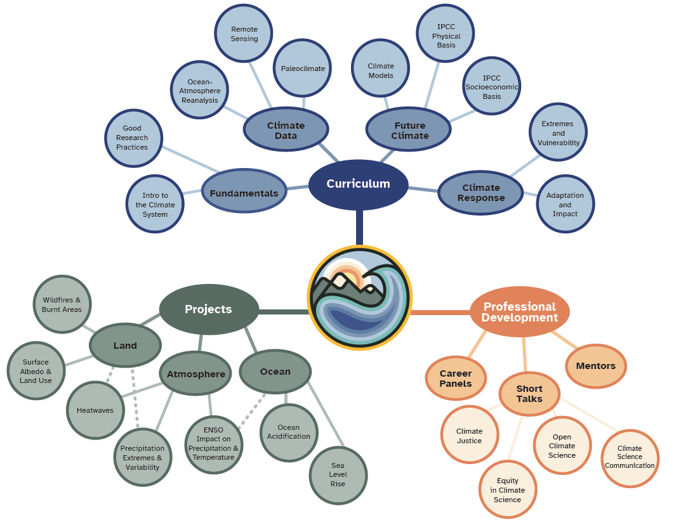

Introduction
Contents


Introduction#
Welcome to Computational Tools in Climate Science!#
Welcome Video#
Concepts map#
{kind=link}
*Image made by Sloane Garelick
We have curated an integrated program of tutorials, research projects and professional development activities. The curriculum spans most areas of climate science and will cover cutting-edge methods to analyse climate data and models. This section will overview the curriculum.
Prerequisite refreshers#
We curated a number of refresher resources for you that will help you prepare for Climatematch Academy. You are not required to study this material before the course. It is rather meant to help you detect and fill any gaps you may have in your knowledge. The Introduction to Python pre-course is an asynchronous course that you can complete on your own time. You will learn how to code in Python from scratch using straightforward examples curated by Project Pythia. If you have questions about the pre-course material, we offer support via Discord chat on July 12-14, 2023 You will also find other open-source resources to catch up on algebra, statistics, calculus, physics, chemistry, and climate science. The topics covered on these days were carefully chosen based on what you need for the course.
The Academy begins!#
You will start out your two weeks at Climatematch Academy covering the fundamentals for understanding climate science data and research. This will include an overview of the climate system and xarray, as well as an introduction to good, equitable research practices.
You will then switch your focus on different types of climate data. You will use reanalysis products, remote sensing data, and paleoclimate proxy data to understand multi-scale climate interactions, climate monitoring, and variations in past marine, terrestrial, and atmospheric climates.
This will be followed by an introduction to the future of the climate system as predicted through climate modeling. You will learn about climate models, how to interpret their projections of future climate and the standard framework for assessing socio-economic climate risks. You will also explore pathways to mitigate those risks. During this time, you will also have a full day to work on your research projects, which will give you a chance to incorporate these new insights into your data analyses and interpretation.
Finally, the course will cover the responses to climate change, including identification of extreme climate events, like heatwaves, droughts, or wildfires, and the use of climate data for tracking the impacts of climate change to inform adaptation measures.
You can find more details on the daily schedule and topics taught on different days in the General Schedule.